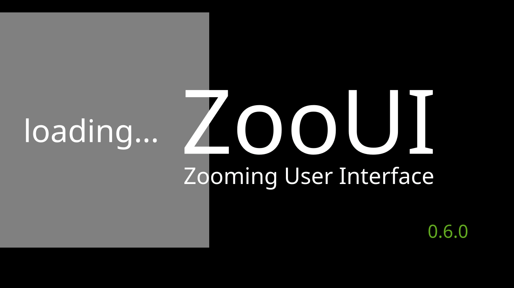

User Interface¶
Upon startup of ZooUI, the user is presented with the home scene:
{kind=link}

Mouse/Keyboard actions:¶
Left-click Select the topmost media under the cursor (by default, smaller objects appear on top of larger ones; this can be toggled via View → Render Order: Smaller on Top):
if there is no media under the cursor then the currently selected media will be deselected
if the Shift key is currently being held then no change will be made to the current selection
Shift+Left-click Add an object to the current multi-selection without deselecting previously selected objects. Clicking a selected object again with Shift held allows dragging all selected objects together.
- Right-click Open a context dialog for the media object under the cursor:
StringMediaObject: Opens the Modify String dialog allowing you to edit the text content and change the color of the string
TiledMediaObject: Opens the Tiled Media Object Options dialog with image manipulation tools:
Rotate Left/Right: Rotate the image by 90° increments
Invert Colors: Apply color inversion effect
Black and White: Convert the image to grayscale
Changes are previewed in the dialog and applied when clicking Apply.
SVGMediaObject: Opens the Modify SVG dialog allowing you to edit the SVG source or change to a different SVG shape
- Click`n’drag Select and move the topmost media under the cursor
by default smaller objects are rendered above larger ones and will be selected first; this can be toggled via the View menu
if there is no media under the cursor then the currently selected media will be deselected and the entire scene will be moved
if the Shift key is currently being held then no change will be made to the current selection and the entire scene will be moved
- Control+Left-click drag Draw a selection rectangle to select multiple media objects:
Hold the Control key
Click and drag with left mouse button to draw a green rectangle
Release to select all objects within the rectangle
Visual feedback: A green rectangle is drawn during the drag operation
Multiple selection: All selected objects are highlighted with green borders
Moving multiple objects: After rectangle selection, drag any selected object to move all selected objects together
Clicking between selected objects maintains the selection for dragging
Esc Deselect the currently selected media
- PgUp/PgDn or Scrollwheel Zoom the currently selected media
if there is no currently selected media, or if the Shift key is currently being held, then the entire scene will be zoomed
if the Alt key is currently being held, then the zoom amount will reduced allowing for finer control
Note: the point under the cursor will maintain its position on the screen
- Arrow keys Move the currently selected media in the specified direction
if there is no currently selected media, or if the Shift key is currently being held, then the entire scene will be moved
if the Alt key is currently being held, then the move amount will reduced allowing for finer control
- Space bar Move the point under the cursor to the centre of the screen
holding the Space bar allows panning by moving the cursor around the centre of the viewport
Del Delete the currently selected media
Ctrl+C Copy the currently selected SVG object to the clipboard
Ctrl+V Paste the clipboard content as an SVG object at the current mouse position (or center of the viewport)
Ctrl+Enter When inside an input dialog (new string, modify string, SVG picker, or modify SVG), accepts the dialog — equivalent to clicking the OK button.
Home Jump to the saved home point, restoring the saved view position and zoom level. Has no effect if no home point has been set.
Shift+Home Save the current view position and zoom level as the home point. A cyan crosshair pulse is displayed at the viewport center to confirm the action. The home point is cleared when a new scene is loaded.
Note
The Home Point feature (saving/restoring the current view) is distinct
from the Open Home Scene Ctrl+Home menu item, which loads the
default data/home.pzs scene file.
Scrollwheel + modifiers on an SVG shape Elongate (resize) the selected SVG object. Only works when a single SVG object is selected:
Ctrl + Scrollwheel on squares/circles/triangles: proportional scaling (both axes equally); on arrows/sticks: elongate length
Shift + Scrollwheel on squares/circles/triangles: scale X-axis only
Ctrl+Shift + Scrollwheel on squares/circles/triangles: scale Y-axis only